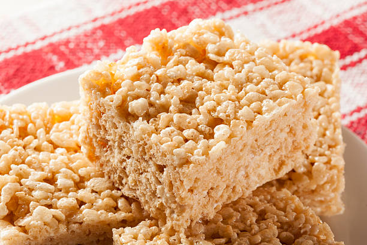

Rice Krispie Treats

Jump to Recipe
Background
How about a suicide pact?
How do we do it?
I'll sting you, you step on me.
That just kills you twice.
Right, right.
Listen, Barry... sorry, but I gotta get going.
I had to open my mouth and talk.
Vanessa?
Vanessa? Why are you leaving?
Where are you going?
To the final Tournament of Roses parade in Pasadena.
They've moved it to this weekend because all the flowers are dying.
It's the Last Chance I'll ever have to see it.
Vanessa, I just wanna say I'm sorry.
I never meant it to turn out like this.
I know. Me neither.
Tournament of Roses.
Roses can't do sports.
Wait a minute. Roses. Roses?
Roses!
Vanessa!
Roses?!
Barry?
Roses are flowers!
Yes, they are.
Flowers, bees, pollen!
| Ingredient
| Amount
|
| Butter
| 3 Tbsp
|
| Mini Marshmallows
| 5 1/2 cups
|
| Rice Krispies
| 6 cups
|
Directions
| Step Number
| Step
|
| 1
| In a large saucepan melt butter over low heat. Add marshmallows and stir until completely melted. Remove from heat.
|
| 2
| Add Rice Krispies cereal. Stir until well coated.
|
| 3
| Using buttered spatula or wax paper, evenly press mixture into 13 x 9 x 2-inch pan coated with cooking spray.
|
| Yeilds 24 servings
|
| Total time: 15 min
|
Tips and Tricks
- You can line your baking pan with parchment paper or waxed paper to cut down on mess.
- Grease your spatula or spoon before combining the melted ingredients.
- For best results, use fresh marshmallows.